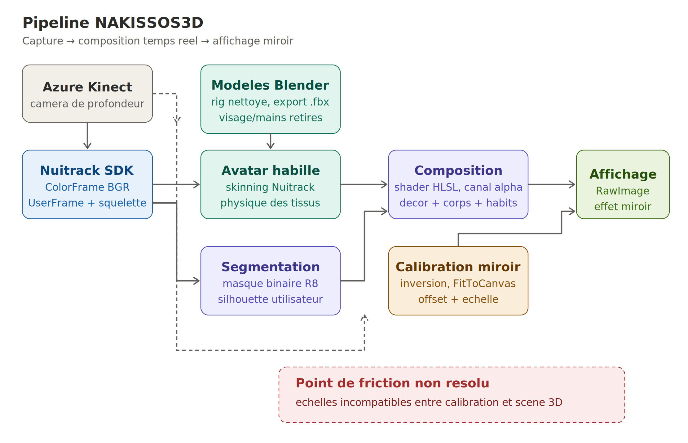
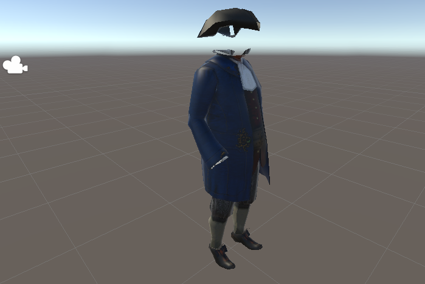
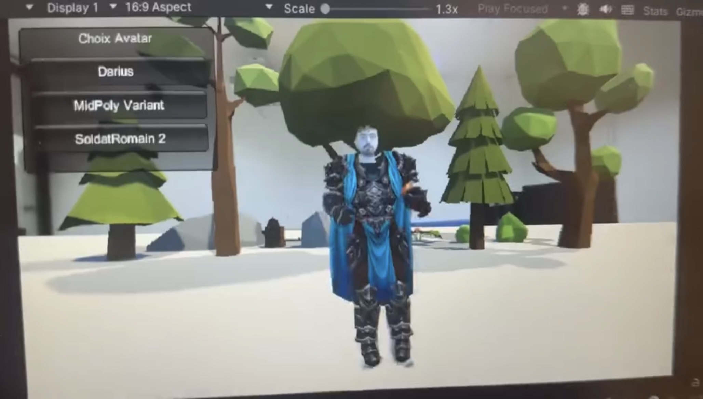
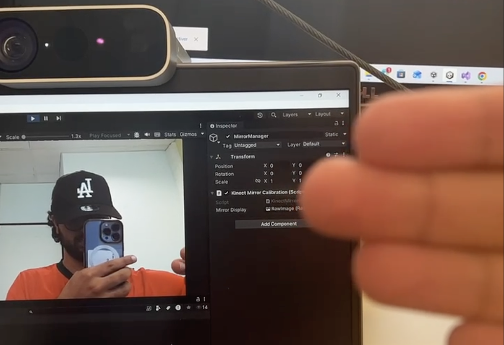

Résumé
Le projet NAKISSOS3D est une application de réalité augmentée qui a pour objectif de rendre le patrimoine accessible au grand public. L'utilisateur se place devant un miroir interactif et s'y voit, en temps réel, vêtu de costumes historiques reconstitués et plongé dans un décor d'époque. L'application repose sur quatre briques techniques : (i) la préparation des modèles 3D sous Blender, (ii) l'animation et l'habillage des avatars sous Unity, (iii) l'incrustation de l'utilisateur dans un décor virtuel par segmentation, et (iv) la calibration géométrique de l'effet miroir.
Introduction
En 2024, un Français sur deux n'est pas allé au musée[1]. Face à ce constat, l'usage des technologies immersives pour renouveler la médiation patrimoniale fait l'objet de nombreux travaux récents[2][3]. NAKISSOS3D s'inscrit dans cette dynamique avec une expérience immersive et ludique : l'utilisateur se place devant un écran sur lequel une caméra de profondeur le filme, et y voit son propre reflet habillé d'un costume historique, dans un décor d'époque. Le projet est mené à l'INSA Rennes sous l'encadrement de Ronan Gaugne (IRISA) et Théophane Nicolas (INRAP).
Le sujet avait été lancé l'an dernier par une première équipe, mais le résultat n'avait pas atteint un prototype véritablement utilisable. Le dépôt GIT que nous avons récupéré ne contenait pas tous les fichiers nécessaires, et la plupart de ceux qui restaient étaient inexploitables. Après discussion avec nos encadrants, nous sommes donc repartis de zéro.
Le rapport est organisé en quatre sections, dans l'ordre logique de la chaîne de traitement : préparation des modèles sous Blender, animation et habillage sous Unity, incrustation de l'utilisateur dans un décor virtuel, et calibration du miroir. Chacun de nous s'est plus particulièrement chargé d'une de ces briques, mais nous avons travaillé ensemble la quasi-totalité du semestre, et il y a peu de décisions qui n'aient pas été prises à plusieurs.
1. Principe général du projet
La figure 1 résume la chaîne de traitement complète. En amont, des modèles 3D de costumes historiques sont
préparés sous Blender : nettoyage du rig, retrait des zones occlusives, export en .fbx.
À l'exécution, la caméra Azure Kinect filme l'utilisateur et fournit, via le middleware
Nuitrack[4], deux flux distincts : une image RGB couleur
et un squelette articulé reconstruit en temps réel à partir de la
profondeur[5]. Le squelette anime un avatar Unity
habillé d'un costume historique, tandis que l'image RGB est segmentée pour extraire la silhouette réelle
de l'utilisateur et la composer avec un décor virtuel via un shader HLSL*.
Enfin, un module de calibration géométrique ajuste la position et l'échelle du flux affiché à l'écran
pour reproduire la perception d'un véritable miroir.
* HLSL (High-Level Shading Language) est le langage de shaders propre à DirectX, utilisé par Unity pour la programmation GPU.

2. Préparation des modèles 3D sous Blender
2.1 Récupération et état initial des modèles
Le projet repose en partie sur des modèles 3D de personnages historiques fournis par l'encadrement : tuniques, capes, accessoires d'époque. Ces modèles avaient déjà servi pour des animations préenregistrées, et disposaient à ce titre d'un rig (le squelette d'animation interne du modèle). Mais ce rig n'avait pas été conçu pour être piloté par une capture de mouvement temps réel, et tel quel, il ne fonctionnait pas dans notre contexte.
2.2 Nettoyage du squelette
Le rig contenait des contraintes mécaniques limitant l'amplitude angulaire de certaines articulations. Or, dans notre cas, les mouvements proviennent d'un utilisateur réel : ses articulations sont déjà bornées physiologiquement, et les contraintes du modèle entraient en conflit avec le squelette Nuitrack, produisant des poses bloquées. Nous les avons toutes retirées. La hiérarchie parent-enfant des os a également été refaite, pour que les rotations se propagent correctement le long du squelette ; sans cela, le maillage du modèle (la surface 3D formée d'un assemblage de polygones) aurait présenté à l'usage des déformations très visibles.
2.3 Suppression des zones occlusives
Sur chacun des modèles, les maillages du visage et des mains ont aussi été retirés. C'est une décision dictée par la suite du pipeline : l'image finale superpose la vidéo réelle de l'utilisateur et l'avatar 3D. Si on garde un visage et des mains modélisés, ils masquent les zones correspondantes de la personne réelle, et l'effet miroir tombe à plat. En libérant ces zones du modèle, on laisse passer le visage et les mains de la personne à travers les ouvertures du costume.
2.4 Export et intégration sous Unity
Les modèles ont été exportés au format .fbx, qui préserve à la fois la géométrie, le
rig et les coordonnées UV (qui indiquent comment la texture 2D s'applique sur le modèle 3D).
À l'import dans Unity, chaque modèle a été encapsulé dans un prefab : un actif réutilisable
qui regroupe le maillage, le matériau et ses textures. Concrètement, on peut alors instancier ou
substituer un modèle pendant l'exécution sans avoir à reconfigurer ses textures à chaque fois.

.fbx et encapsulé dans un prefab.
3. Unity : animation et habillage dynamique
3.1 Choix des outils et environnement technique
L'application est développée sous Unity. Les scripts en C# sont écrits sous Visual Studio 2022.
Le choix de la solution d'animation par capture de mouvement a en revanche été revu. L'équipe précédente s'appuyait sur le SDK officiel de Microsoft pour l'Azure Kinect[6], dont le module Body Tracking repose sur une inférence neuronale qui exige une carte graphique NVIDIA. Aucun de nos postes n'en disposait. À cela s'ajoutait une contrainte plus pratique : l'utilisation de la Kinect, imposée par le sujet, exigeait Windows, et seuls deux postes du laboratoire étaient compatibles ; à quatre, ça compliquait nettement le travail en parallèle. Nous nous sommes donc tournés vers Nuitrack[4], un middleware qui expose les données squelettiques de la Kinect sans dépendre d'une carte NVIDIA, avec une latence compatible d'un usage temps réel.
3.2 Pipeline d'intégration de l'avatar
Le suivi a été mis en place progressivement, en validant chaque étape avant d'enchaîner :
- un stickman pour vérifier la qualité du squelette Nuitrack, sans interférence d'un avatar complexe ;
- un avatar humanoïde standard récupéré sur l'Asset Store de Unity, pour mettre au point l'attachement du squelette à un personnage habillé et observer un rendu complet ;
- nos modèles préparés sous Blender, importés en
.fbx; - le modèle « Romain » hérité de l'équipe précédente, ce qui a confirmé que le pipeline pouvait digérer des actifs existants une fois remis au propre.
3.3 Physique des tissus et réalisme visuel
Le comportement des vêtements a été un vrai sujet. Tels quels, appliqués sur un squelette animé, ils suivent le corps de manière rigide, comme s'ils étaient peints dessus. Pour éviter cet effet plaqué, le rendu s'appuie sur le composant Skinned Mesh Renderer de Unity[7], qui laisse un maillage se déformer avec le squelette tout en autorisant des ajustements locaux sur les vertices (les points qui composent le maillage 3D).
Sur les zones les plus visibles (bas des tuniques, capes), nous avons appliqué un délai de réponse au mouvement, paramétré directement dans Unity : ces parties suivent le corps avec un léger retard, ce qui imite le flottement naturel d'un tissu. La cape a demandé en plus un travail sous Blender, où nous avons rajouté des vertices pour donner au maillage assez de degrés de liberté.
3.4 Interactivité et changement de costume
Un menu interactif en C# a été développé pour répondre à l'objectif de médiation culturelle. Chaque
accessoire ou pièce de vêtement est un prefab attaché à l'articulation (joint) du
squelette correspondant à la zone du corps concernée : haut du corps, tête, etc. Un script associé à
chaque accessoire contrôle son affichage. Le menu, dessiné dans un Canvas Unity, permet de
changer de tenue en cours d'exécution, sans relancer l'application : la bascule d'une époque à l'autre
se fait en quelques clics.

Canvas Unity.
4. Incrustation en temps réel de l'utilisateur dans un décor virtuel
4.1 Problématique
Faire apparaître à l'écran la personne réelle, vêtue des modèles 3D et plongée dans un décor virtuel : c'est ce qu'on attend du composite final. C'est sans doute la partie la plus visible du projet, et c'est aussi celle qui nous a posé le plus de questions. La version précédente n'avait jamais réussi à extraire le corps de l'utilisateur du flux vidéo. Faute de segmentation, elle remplaçait totalement la personne par un avatar 3D animé : on ne voyait jamais le vrai utilisateur. Des approches similaires ont été explorées dans la littérature pour les cabines d'essayage virtuelles[8].
Notre solution combine un masque de segmentation produit par Nuitrack et un shader HLSL qui compose l'image finale. Il a fallu aussi gérer un problème de format couleur que nous détaillons plus loin.
4.2 Segmentation par masque Nuitrack
Nuitrack expose deux flux issus de la Kinect. Le ColorFrame est l'image RGB classique.
L'UserFrame, lui, est une carte qui indique pour chaque pixel l'identifiant de l'utilisateur
détecté à cet endroit, ou zéro si aucun corps n'y est repéré. On en tire un masque binaire : 255 quand
un humain est détecté, 0 sinon. Le masque est stocké dans une Texture2D au format
R8 (un seul canal, donc peu coûteux), et mis à jour à chaque frame.
4.3 Composition par shader HLSL
Une fois le masque construit, un composant que nous avons appelé GreenScreenCompositor
envoie deux textures à un shader HLSL : la texture couleur _RGBTex et le masque
_MaskTex. Le shader détermine l'alpha de chaque pixel à partir du masque : il garde la
couleur réelle là où une personne est détectée, et rend le pixel transparent partout ailleurs. Le seuil
de 0.05 sert à filtrer les valeurs résiduelles de compression :
float isPerson = step(0.05, mask.r); return fixed4(rgb.rgb, isPerson);
L'image obtenue est écrite dans une RenderTexture, qu'on affiche ensuite via un
RawImage de l'interface Unity. À partir de là, c'est le moteur qui prend le relais pour la
composition : la scène 3D du décor est rendue en arrière-plan, la silhouette réelle de l'utilisateur
s'incruste par-dessus, et les vêtements 3D peuvent à leur tour passer en avant-plan.

4.4 Gestion du format couleur et correction du canal RGB
Restait un détail qui s'est révélé être un piège. La première version récupérait la texture couleur par
réflexion C# sur le composant interne RGBToTexture de la classe FrameUtils de
Nuitrack. Mais la texture obtenue n'était pas dans un format standard, et le shader la lisait comme un
canal unique, ce qui produisait une image en niveaux de gris.
La correction a consisté à s'abonner directement à l'évènement
NuitrackManager.onColorUpdate. On y récupère le ColorFrame brut, on permute
les canaux BGR (format natif de la Kinect) vers RGB, et on charge le tout dans une Texture2D
au format RGB24. Les couleurs sont alors restituées correctement.
5. Calibration géométrique du miroir
5.1 Problématique
Afficher tel quel le flux vidéo ne suffit pas à donner un effet miroir convaincant. Quand l'utilisateur place sa main à droite de son corps, son reflet doit la montrer à droite du miroir, à l'endroit géométriquement attendu. Il faut que la position et la taille de l'utilisateur à l'écran correspondent à ce qu'il observerait dans un vrai miroir physique placé au même endroit, et cela dépend directement de la position de la caméra par rapport à l'écran. Pour simplifier le calage, la Kinect a été placée juste au-dessus de l'écran et centrée horizontalement, ce qui limite la parallaxe à compenser.
C'est également à ce stade qu'est apparue la principale difficulté d'intégration du projet : un défaut d'échelle entre la calibration et le reste de la scène 3D, sur lequel nous reviendrons en conclusion.
5.2 Architecture du module
Aucun composant existant ne couvrait ce besoin, nous avons donc écrit le nôtre : un script C# baptisé
KinectMirrorCalibration. Il s'abonne à l'évènement
NuitrackManager.onColorUpdate pour recevoir chaque trame couleur de la Kinect, et charge
les données brutes dans une Texture2D au format RGB24. Cette texture est
affectée à un RawImage placé dans un Canvas plein écran. Tout le travail
géométrique se fait ensuite sur le RectTransform de cette RawImage, via une
méthode ApplyCalibration qu'on peut rappeler à la volée, sans interrompre le flux vidéo.
5.3 Inversion horizontale et paramètres ajustables
Le plus simple d'abord : une inversion horizontale, qu'on obtient en mettant à -1 la composante
x du localScale du RectTransform. C'est ce qui donne la symétrie
d'un miroir. Une seconde opération, gérée par la méthode FitToCanvas, dimensionne la
RawImage pour qu'elle remplisse le canvas tout en respectant le ratio de la texture Kinect,
ce qui évite toute déformation.
Pour ajuster finement l'effet miroir, le composant expose quatre paramètres modifiables en temps réel :
offsetX, offsetY, scaleX et scaleY. Les deux premiers
translatent l'image pour compenser le décalage vertical introduit par la Kinect placée au-dessus de
l'écran. Les deux autres ajustent la mise à l'échelle, pour que la silhouette affichée occupe à l'écran
la surface qu'occuperait un vrai reflet. Trois méthodes publiques (SetOffset,
SetScale, SetFlip) permettent de modifier ces valeurs depuis l'éditeur ou par
script, et relancent automatiquement ApplyCalibration. En pratique, ces réglages dépendent
du couple écran/caméra utilisé ; il faut donc pouvoir les refaire vite quand on déplace le dispositif
d'une salle à l'autre. Une amélioration possible serait d'ajuster automatiquement le facteur d'échelle
à partir de la distance utilisateur fournie par la profondeur de la Kinect.

Conclusion
Mises bout à bout, les quatre briques décrites ici forment un prototype de miroir interactif. Les modèles 3D nettoyés sous Blender alimentent un pipeline Unity qui anime un avatar à partir du squelette Nuitrack, et lui applique des vêtements historiques changeables à la volée. Le flux vidéo de la Kinect est extrait par segmentation et composé avec une scène 3D, ce qui permet à l'utilisateur de voir apparaître son propre visage et ses propres mains à travers le costume virtuel. L'ensemble est restitué à l'écran selon une géométrie calibrée pour imiter un vrai miroir.
La principale difficulté est apparue à l'assemblage. La calibration géométrique a été mise au point en isolation : elle applique au flux vidéo un facteur d'échelle nécessaire pour reproduire la sensation miroir. Le reste de la chaîne (avatars 3D, décors, vêtements) raisonne lui dans le repère natif de la scène Unity, sans zoom. Une fois les composants assemblés, les proportions ne coïncident plus : la silhouette réelle de l'utilisateur et l'avatar habillé n'apparaissent pas à la même échelle. Le problème a été identifié tard et n'a pas pu être corrigé dans le temps imparti.
Deux pistes nous paraissent prometteuses pour une prochaine itération. La première serait de porter la
calibration miroir dans le repère 3D de Unity, en agissant non plus sur la RawImage du flux
vidéo mais sur la caméra Unity elle-même : un même facteur d'échelle s'appliquerait alors à l'utilisateur
réel et à toute la scène 3D. La seconde, plus rapide à tester, consisterait à conserver la calibration
actuelle et à appliquer aux avatars et au décor le même localScale qu'à la
RawImage, en regroupant tout le contenu 3D sous un parent commun dont on contrôlerait
l'échelle. Aucune des deux n'a été implémentée, mais l'analyse du KinectMirrorCalibration
laisse penser que la seconde demande peu de modifications.
Au-delà de ce point technique, plusieurs améliorations sont envisageables : enrichir le catalogue d'avatars et d'accessoires pour couvrir d'autres époques, raffiner la simulation des tissus, intégrer le menu directement dans la scène 3D plutôt qu'en overlay, ou permettre la manipulation de l'interface par les mouvements de l'utilisateur. L'architecture modulaire mise en place cette année rend ces extensions plus simples à mettre en œuvre.
Bibliographie
- Ministère de la Culture. Patrimoine : la fréquentation consolidée en 2024, 2025. culture.gouv.fr
- M.K. Bekele, R. Pierdicca, E. Frontoni, E.S. Malinverni, J. Gain. A Survey of Augmented, Virtual, and Mixed Reality for Cultural Heritage. ACM Journal on Computing and Cultural Heritage, 11(2), 2018. dl.acm.org/doi/10.1145/3145534
- R. Gaugne, T. Nicolas, A. Tortolano, B. Caraman, A. Pelletier. Mixing Worlds: Current Trends in Integrating the Past and Present through Augmented and Mixed Reality. Advances in Archaeological Practice, Cambridge University Press, 2022. cambridge.org
- 3DiVi Inc. Nuitrack SDK Documentation, 2024. github.com/3DiVi/nuitrack-sdk
- J. Shotton, T. Sharp, A. Kipman, A. Fitzgibbon, M. Finocchio, A. Blake, M. Cook, R. Moore. Real-time human pose recognition in parts from single depth images. Communications of the ACM, 56(1), 2013. dl.acm.org/doi/10.1145/2398356.2398381
- Microsoft. Azure Kinect Body Tracking SDK Documentation, 2024. microsoft.github.io/Azure-Kinect-Body-Tracking
- Unity Technologies. Unity Manual: Skinned Mesh Renderer component reference. docs.unity3d.com
- S.B. Adikari, N.C. Ganegoda, R.G.N. Meegama, I.L. Wanniarachchi. Applicability of a Single Depth Sensor in Real-Time 3D Clothes Simulation: Augmented Reality Virtual Dressing Room Using Kinect Sensor. Advances in Human-Computer Interaction, 2020. hindawi.com